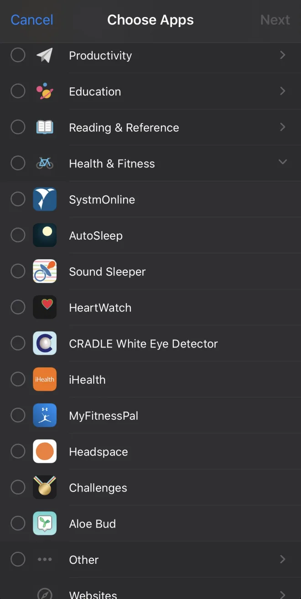
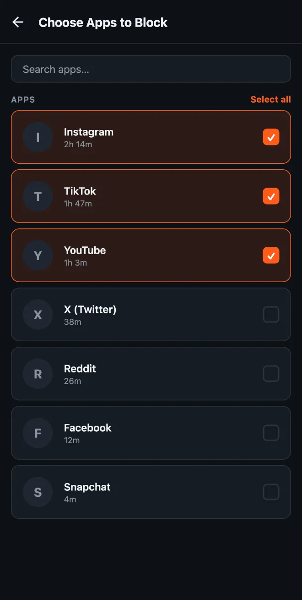

3 things I wish Apple would fix in the Screen Time API
I make HonorFit, an app blocker where you earn screen time by doing pushups (honor system, no camera). It's the same app on iPhone and Android, same idea, same code for most of it. And honestly? The Android version is nicer to use.
That's not because Android is better at blocking apps. iOS's Screen Time API is actually really solid at the blocking part. It's because iOS boxes you in on three specific things, and none of them seem to be there to protect users. So here's my list, with what I'd ask Apple for. I tried to stick to things that wouldn't cost anybody any privacy.
(If you want the nuts-and-bolts version of building on this API, I wrote that up separately: what Apple's docs don't tell you.)
1. You can only have one Screen Time app at a time
Say you already use Brick, Opal or one sec, and you want to try HonorFit too. On iPhone you can't. When the second app asks for Screen Time access, iOS doesn't even show the permission prompt. It just throws an error saying Family Controls is available for only one application at a time. I've seen that error myself, and other developers are hitting it too.
To switch, you have to go to Settings › Screen Time › Apps with Screen Time Access, turn off the other app, and sometimes restart your phone. HonorFit now detects the error and walks people through that, because the raw error message means nothing to a normal person.
Here's the weird part: when Apple introduced this kind of authorization at WWDC22, they said that unlike parental-control authorization, individual authorization can be used by any number of apps on a device. That's not what happens today, and I couldn't find it documented anywhere.
Why this isn't in users' best interest: people mix tools. Somebody might use a Brick for hard focus sessions at work and HonorFit to earn their evening scrolling. Apple already has a rule for combining restrictions: when several ManagedSettingsStores set the same thing, in Apple's words "the most restrictive setting always wins." Doing the same across apps would let people use both, and a phone can only end up more locked down that way, never less.
2. The app picker is clunky, and apps can't customize it
On iPhone, picking which apps to block means Apple's FamilyActivityPicker. It's a system sheet the app can't change, except for a line of header and footer text. It opens on a list of categories (Social, Games, Entertainment...), and you tap into a category to find the actual apps. On Android, I build the list myself, so HonorFit shows your installed apps sorted by how much you used each one in the last 24 hours.


Two things bug me about the iOS one:
- It's really easy to block a whole category by accident. Tap the category row instead of opening it, and you've just picked every app in it, including ones you install later. For a lot of apps that's never what you want. You want Instagram and TikTok, not "Social".
- You can't see which apps are actually eating your day. The whole reason someone opens an app blocker is "I spend too much time on my phone." The picker is the one moment they're deciding what to block, and it gives them zero info about where their time goes. Your iPhone knows exactly how long you spent in each app (it's right there in Settings), but the picker doesn't show it.
This wouldn't cost any privacy. The picker is drawn by iOS in its own process. The app never sees what's in it, only opaque tokens for whatever you picked. HonorFit literally can't tell which apps you chose. So iOS could show usage times right inside the picker, and the app still wouldn't learn a thing. Apple already does something like this with DeviceActivityReport extensions, which show your usage inside a sandbox the app can't read.
- A picker option to choose whole categories or just apps, so an app blocker can offer an apps-only list with no accidental category picks (and hide websites if it doesn't use them).
- An option to sort by, and show, measured screen time next to each app, rendered by iOS so the app never sees the numbers.
3. You can't see an accurate countdown of your time left
In HonorFit, your earned time only runs down while you're actually in a blocked app. So the obvious thing to show is a countdown: "12:34 left", ticking down while you scroll and stopping when you leave.
On Android that's easy. HonorFit's background service checks which app is on screen every second, and the notification uses Android's built-in countdown timer, so the notification shade redraws it every second by itself. You pull down the shade and see exactly how much time you have left, to the second.
On iPhone it isn't possible, and here's why:
- iOS never tells the app when you open or leave a blocked app. All you get is "this much usage has piled up" events. HonorFit sets one for every 15 seconds of use, and they're delivered to a background extension that updates the notification.
- A regular notification can't count down by itself, so the best HonorFit can do is swap in new text each time an event arrives. That's why the iPhone notification says "~12:30 remaining" with a squiggle: it jumps in 15-second steps.
- Those events don't always show up on time either. On iOS 26 I've seen them come late, or several at once.
- Live Activities can count down by themselves, but they can't pause. Nothing tells the app you left Instagram, so a Live Activity would keep ticking while your phone sits on the table, which would be wrong.
So iPhone users get a rough estimate, while Android users get the real number.
DeviceActivity event drive a countdown that iOS renders itself: in a notification, a Live Activity or the shield, running only while the monitored apps are on screen. iOS already tracks that usage to the second, so it could show the time without handing the app anything new. Even simple "blocked app opened / closed" callbacks to the monitor extension would fix most of it.That's it
To be fair to Apple, the privacy model here is really good. The app never learns what you blocked or how much you use it, and I'd hate for that to change. None of the three things above would change it. They'd just let iPhone apps be as helpful as the Android versions already are.
If you build on Screen Time too and want any of these, please file it in Feedback Assistant. From what I understand, duplicate reports are how things get noticed. And if you just want to try the app, HonorFit is free on iPhone and Android. Maybe some of y'all will enjoy it!